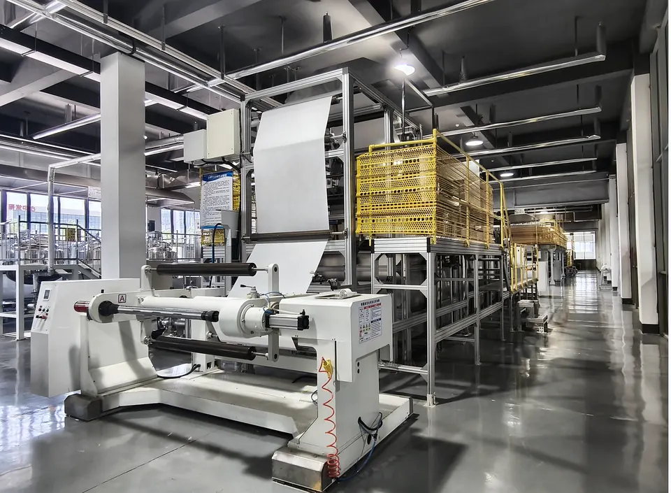

反渗透 · 纳滤 · MBR · 超滤膜
为最难处理的水而生。
华信研发并制造反渗透、纳滤、MBR 和超滤膜，已在高盐矿井水、垃圾渗滤液和零排放项目中得到验证。
99.62%高盐矿井水回用项目中，693 天运行记录期间保持的脱盐率。HX-BWFR-8040-400，宁夏宁东。

华信 8040 反渗透膜元件 · 棚拍照片
向下滚动
走进华信
从膜片到安装投运的膜元件。
济宁生产线、MBR 组装车间及客户反渗透现场的真实影像，以及华信超滤组件内部工作原理动画。
动画
华信概览
清华团队创立、拥有自主生产线的膜企业。从聚合物配方到成品膜元件，工艺由我们掌握，性能也由我们负责。
2023由清华大学博士团队创立
10M m²膜片年产能，山东济宁
9个产品系列，覆盖反渗透、纳滤、MBR 和超滤
4040·8040标准规格，适配行业通用压力容器
产品
九大系列，同一套数据标准。
每个华信产品页面都列出测试条件、运行限值及现场数据，工程师无需询问即可判断是否适用。


现场数据
数据来自工厂现场，而非宣传册。
与知名品牌并行运行，处理大多数膜并非为之设计的进水。竞品名称隐去，运行条件全部公开。
污染 · 525 天 · 40,000 µS/cm 矿井水+0.8 kg华信 HX-SW 膜元件的增重；同等条件下某合资品牌增重 22.4 kg。
案例 2 · 宁夏宁东 →
脱盐率 · 693 天记录 · TDS 14,047 mg/L99.62%HX-BWFR 在日产水 30,000 吨的矿井水回用中的稳定脱盐率；某国内品牌为 99.10%。
案例 1 · 宁夏宁东 →
零排放 · 367 天记录 · ~23,000 µS/cm99.36%HX-SW 在某工业零排放厂的平均脱盐率；某国际一线品牌为 99.02%。案例 4 · 宁夏 →
垃圾渗滤液 · 二段 · 41,250 µS/cm94.20%HX-SW 处理垃圾渗滤液的二段脱盐率；某国际领先海水膜品牌为 92.80%。现场测试 3 →
应用领域
华信膜当前的应用领域。
六大领域，每个都对应相关产品与支撑数据。
ZLD
零液体排放
反渗透在热法处理前对水流进行浓缩。
HX-BWFR · HX-SW · HX-BMDW高品质饮用水
纳滤可软化水质、去除有机物和微污染物，同时保留部分有益矿物质；前置超滤去除颗粒物和微生物。
HX-HQ · HX-UF · HX-XLPREUSE市政污水回用
MBR 以膜分离替代沉淀澄清；超滤和抗污染反渗透对出水进行深度处理以供回用。
HX-MBR · HX-UF · HX-BWFRSEA海水淡化
海水反渗透膜元件承担淡化工段；同样的元件也可用于从浓水中提取高价值副产品。
HX-SWLi盐湖提锂
根据卤水定制选择性纳滤与反渗透膜，用于浓缩锂，减少对吸附剂或助剂的依赖。
HX-BM · HX-HQUPW工业高纯水
低压和超低压反渗透以高脱盐率和高通量构成多级纯化的核心。
HX-XLP · HX-LP · HX-BW
华信工厂生产制造
原材料、设备与工艺，一体掌控。
创始团队打造了集原材料、设备与工艺于一体的自主生产线。通过计算机模拟和工艺试验，找出了决定规模化生产中性能与良率的关键参数。
- 山东济宁年产膜片 1000 万 m²
- 狭缝挤出精度经调校，膜片稳定一致
- 反渗透/纳滤全品类膜元件及 MBR 组件组装
荣誉
获国际和国内创新评审机构认可。
- 金奖日内瓦国际发明展 · 2026
- 三等奖HICOOL 全球创业大赛 · 2023
- 二等奖“互联网+”北京赛区 · 2023
- 十佳团队清华大学 · 2023